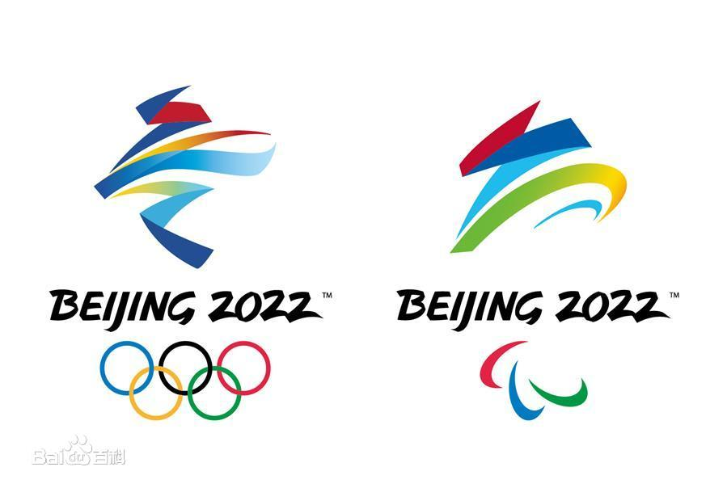

花样滑冰（Figure Skating）是冰上运动项目之一。运动员通过冰刀在冰面上划出图形，并表演跳跃、旋转等高难度动作。花样滑冰的裁判会按照动作的质量与艺术性表现进行综合评分。
花样滑冰起源于12世纪的荷兰，后来相继在德国、美国、加拿大等欧美国家迅速发展。1892年，国际滑冰联盟在瑞士正式成立，并制定了该项目的比赛规则。1872年奥地利首次举办花样滑冰比赛。1882年，奥地利花样滑冰选手弗列依和他的妻子在维也纳冰场手拉手跳起了双人舞后，诞生了双人滑。1896年在俄国彼得堡举行首次世界男子单人花样滑冰锦标赛。1990年，亚洲滑冰联合会成立。
花样滑冰最高级的组织机构为国际滑冰联盟，1892年在荷兰成立。中国最高级的组织机构为中国花样滑冰协会，2018年1月18日在北京成立。
| 中文名 | 花样滑冰 | 外文名 | Figure Skating |
| 起源时间 | 12世纪 | 起源地点 | 荷兰 |
| 类别 | 冰上运动 | 代表人物 | 羽生结弦、金妍儿、隋文静、韩聪 |
| 最高组织机构 | 花样滑冰联盟 | 主要比赛 | 世界花样滑冰锦标赛、四大洲花样锦标赛、世界花样滑冰团体锦标赛 |
花样滑冰（figure skating） 起源于18世纪的英国，后相继在德国、美国、加拿大等欧美国家迅速开展。1772年英国皇家炮兵中尉约翰逊（Robert Johnson）撰写的《论滑冰》在伦敦出版，这是世界上出版的第一部涉及到花样滑冰的书籍。1863年美国芭蕾舞表演艺术家海因斯（Jackson Haines）将滑冰运动与舞蹈艺术融为一体，在欧洲巡回表演，丰富了花样滑冰的内容和形式。1868年美国的丹尼尔·梅伊（Daniel Mey）和乔治·梅伊（George Mey）首次表演双人滑，这是世界上有记载的最早的花样滑冰表演。1872年奥地利首次举办花样滑冰比赛。1896年在俄国彼得堡举行首次世界男子单人花样滑冰锦标赛，1906年在瑞士达沃斯举行首届世界女子单人花样滑冰锦标赛，1952年在法国巴黎举行第一次世界冰上舞蹈锦标赛。花样滑冰的冰场长56～61米，宽26～30米，冰的厚度不少于3～5厘米。1924年被列为首届冬奥会比赛项目。有男、女单人滑（1924年列入），男女双人滑（1924年列入）和冰上舞蹈（1976年列入）4个比赛项目。每个国家和地区每项限报3人（队）。
从一般冰上运动发展到花样滑冰，是近百年的事。18世纪，随着欧洲冶铁工业的发展，铁制冰刀得到了改进。但这时的冰刀刀身下面没有沟槽，只能滑“螺旋线”、“屈膝大一字”、“燕式平衡”及各种“切替步”等简单动作。19世纪，在维也纳、布达佩斯、布拉格、伦敦、柏林、彼得堡、费城、多伦多等地先后成立了滑冰俱乐部。1860年，在俄国彼得堡已有人能把俄国民间舞蹈融合到滑冰之中，从而丰富了滑冰的内容和形式。同时，美国的“蹲踞旋转”动作也传到了维也纳。1892年，在荷兰阿姆斯特丹召开了第 1次各国滑冰协会代表联席会议,会议制定了竞赛规则,并决定每年举行一次世界速度滑冰锦标赛、欧洲速度滑冰锦标赛、世界花样滑冰锦标赛和欧洲花样滑冰锦标赛，还成立了国际滑冰联盟。
1896年，在俄国彼得堡举行了第 1次世界男子单人花样滑冰锦标赛；1906年，在瑞士达沃斯举行了第 1次世界女子单人花样滑冰锦标赛；1908年，在俄国彼得堡举行了第 1次世界双人花样滑冰锦标赛；1952年，在法国巴黎举行了第 1次世界冰上舞蹈锦标赛。世界花样滑冰锦标赛从1896年开始到1980年共举行过70次。
目前，世界男子单人花样滑冰，比较普遍地掌握了3周跳，顶尖运动员已经能完成各类4周跳；女子已进入勾手3周跳的高难度。在自由滑中突出了跳跃动作的地位，起跳速度大，动作节奏鲜明，落冰稳定；旋转动作在自由滑中的比重较小，并向联合多变的方向发展；在自由滑的快速步法中,提高了难度和技巧性。单人自由滑的发展,无论是起跳速度、滑行速度和节奏变化速度，都显示出快速多变的特点；在表达音乐主题的手法上，大都具有自己民族的风格，向表演化方向发展。目前，世界花样滑冰许多名手技术接近，在比赛中主要是在同一难度水平上比质量，可以说“优质、高难”是当前世界花样滑冰技术发展的趋向。
中华人民共和国成立后,中国北方一些城市的大、中、小学校开展了花样滑冰运动。在群众性花样滑冰广泛开展的基础上，1953年2月在哈尔滨举行了第1次全国冰上运动大会,花样滑冰被列为比赛项目。1953～1980年,共举行过25次全国性花样滑冰比赛。1979年10月,中国花样滑冰运动员参加了在日本举行的NHK杯国际邀请赛,1980年 2月参加了第13届冬季奥林匹克运动会的花样滑冰比赛，1980年3月参加了第70届世界花样滑冰锦标赛。
1980年，28名中国冰雪健儿出征在美国普莱西德湖举行的第13届冬奥会，其中包括两届花滑选手，分别参加男女单人滑比赛。与其他项目一样，中国花滑选手在赛场同样没有竞争力，男子单人滑许兆晓在17名选手中仅列第16，女单选手包振华则在22名选手中垫底。这就是当时中国花样滑冰的家底。
1984年，中国参加了萨拉热窝冬奥会，许兆晓和包振华的名次均有小幅提升，前者在23名男单选手中列第18名，后者摆脱了“副班长”头衔，但实力在参赛选手仍然属于末流。这届冬奥会，中国选手首次参加了双人滑和冰舞比赛，栾波/姚滨、奚鸿雁/赵晓雷分别在这两个项目殿底。
1984年至1985年，中国花滑男单选手先后两次奏出强音，先是许兆晓在1984年匈牙利国际花样滑冰邀请赛力挫群雄，后是张述滨在1985年冬季大运会摘取金牌。这两个国际比赛冠军，当时在国内引起不小震动，但严格意义上讲，这两项赛事含高量均不高，中国选手仍然没有改变在花滑世界的落后位置，三年后的1988年卡尔加里冬奥会，国手在男单、双人、冰舞均位于末流或末位。
中国花滑首次让世界冰坛感到震惊的，是一位名叫陈露的中国女孩。陈露早在11岁就完成过三个三周跳的天才选手，当时有些国内行家就预言，陈露很有可能在欧美人苦心经营的花样滑冰长城打开一个缺口。在教练李明珠的精心教导下，短短三年过后陈露就在1990年世青赛勇夺女单亚军。1992年，陈露先后夺得冬奥会第6名、世锦赛第3名，在世界舞台全面展示了中国花滑运动的新形象。此后几年，陈露在世锦赛上摘金夺银，1994年、1998年两届冬奥运连续夺得第三名，为中国花滑运动在世界赛场争得一席之地。从此中国选手成为世界花滑界的一支主要力量。
就在陈露退出冰坛的1998年长野冬奥会，一对中国双人滑选手引起世人的关注，他俩就是申雪/赵宏博。那届比赛，25岁的赵宏博和20岁的申雪勇夺第五名，改变了中国双人滑选手冬奥会逢赛必殿底的尴尬史，成为继陈露之后中国又涌现出的两位世界级高手。1999年至2002年，申雪/赵宏博先后取得世锦赛亚军、日本NHK大奖赛冠军、大奖赛总决赛冠军和盐湖城冬奥会第三名等佳绩，成为国际冰坛公认的超级明星。国际滑联一位权威人士说：“中国的双人滑就像撑竿跳一样，一下就窜了上来。”
与陈露不同的是，申雪/赵宏博并不是独自在作战，他俩的恩师姚滨，也就是在1984年萨拉热窝冬奥会双人滑殿底的那位男选手，在盐湖城冬奥会周期先后打造了庞清/佟健、张丹/张昊两位优秀组合，两对组合在那届奥运会分别夺得第9、第11。一个双人滑的中国时代呼之欲出！
经过又一个四年的努力，中国双人滑选手很自然把目标瞄准在冬奥会金牌上。天有不测风云，2005年8月初的一堂训练课，赵宏博在练习旋转时突然跌倒，这不是一次平时的动作失误，让他跌倒的原因是左脚跟腱断裂！当时距离都灵冬奥会仅半年时间，对一心创造辉煌的赵宏博来说，无异于一个晴空霹雳。凭借战胜伤病、进军冬奥的勇气的决心，赵宏博在离开冰场后的第88天，神奇地重新站在冰场上，重新与申雪拉上了手。
都灵冬奥会，三对中国双人滑组合刮起了一股强烈的旋风，虽然伤病等原因使申雪/赵宏博他们无法一圆冬奥会金牌梦想，虽然张丹/张昊因动作失误未能成功冲顶，但张丹/张昊、申雪/赵宏博和庞清/佟健三对中国选手无一例外地跻身四强，形成了对“花滑王国”俄罗斯的合围之势，这一业绩足以令震憾国际体坛。一个月后，佟健/庞清和张丹/张昊在世锦赛上包括金银牌，创造了中国双人滑的又一个新纪录。
2009年10月底在北京举行的中国大奖赛，淡出两年有余的申雪/赵宏博重新回到赛场，他俩一炮打响，以200.97的高分摘取金牌。两位老将的强势复出，改变前两年中国花滑选手一直被德国好手萨维琴科/索尔科维压制的状况。半个月后的美国大奖赛，申雪/赵宏博再次笑到最后。年底的大奖赛总决赛，申雪/赵宏博携手佟清/庞健，双双击败近两届世锦赛冠军萨维琴科/索尔科维，申雪/赵宏博214.25的总分甚至刷新了国际滑联最高分纪录。这是中国花滑选手第一次在冬奥会前夕占据有利位置，种种迹象显示：冬奥会金牌距离中国花滑选手近在咫尺。
果然，温哥华奥运会成为中国花滑选手夺金的见证地。短节目比赛，申雪/赵宏博以微弱优势领先萨维琴科/索尔科维，庞清/佟健则紧随川口优子/斯米尔诺夫之后。谁能问鼎这届冬奥会金牌，一时似乎难见分晓。两强相遇勇者胜，在巨大的压力下，萨维琴科/索尔科维、川口优子/斯米尔诺夫等主要对手纷纷出现失误，当庞清/佟健以一套几无暇疵的表演完成全套动作时，已经提前宣告中国选手捅破了冬奥会最后一层窗户纸。随后，申雪/赵宏博在自由滑的出色发挥，使双人滑冠亚军悉数写在中国选手名下。申雪/赵宏博、庞清/佟健，这两对征战多届冬奥会的两对老将，在温哥华赛场用一个完美的句号，共同创造了中国冰雪运动的新辉煌。
到了2018年韩国平昌冬奥会，中国花样滑冰取得新突破。2018年2月17日，平昌冬奥会花样滑冰男单自由滑比赛中国选手金博洋得到194.45分，以总分297.77分获得第四名，打破了中国男子单人滑的最佳成绩。
2022年，北京将举行第24届冬季奥林匹克运动会。2015年7月31日，托马斯·巴赫宣布2022年冬季奥林匹克运动会主办城市是北京，北京成为第一个举办过夏季奥林匹克运动会和冬季奥林匹克运动会以及亚洲运动会三项国际赛事的城市，也是继1952年挪威的奥斯陆举办后时隔70年的第二个举办冬奥会的首都城市，同时张家口市凭借与北京市共同申办2022北京冬奥会的契机成功获得了2021年国际雪联自由式滑雪和单板滑雪世界锦标赛的举办权与北京市石景山区成为中国第一个获得此项赛事举办权的城市，同时北京与张家口成为中国第一个获得过冬季奥林匹克运动会举办权的城市。
北京冬季奥运会设7个大项，15个分项，109个小项。北京将主办冰上项目，张家口将主办雪上项目，延庆协办张家口举办雪上项目。
期待中国花滑运动队在2022北京冬奥取得好成绩！
更多有关2022北京冬奥信息敬请点击上图访问↑。